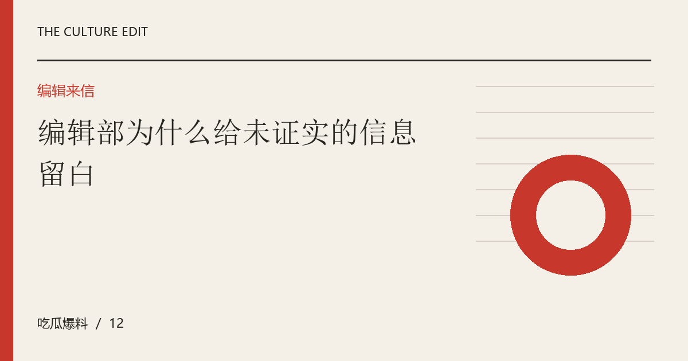

编辑部为什么给未证实的信息留白
不是每个细节都必须有答案。说明未知、尊重边界和留下更正入口，是让资讯整理更可信的基本方法。

留白是一种信息表达
当材料不足时，写明尚不清楚比提供一个顺畅故事更准确。读者需要知道哪些已经确认，哪些只是转述，哪些根本没有公开依据。留白不是故作神秘，也不应搭配暗示性标题诱导猜测。它应当让人停止不必要的推断，并明确说明未来需要什么材料才可能进一步判断。
不以完整感牺牲真实边界
事件整理很容易追求起因经过结果齐全，但真实世界并不总会公开每个环节。为了填补空缺而猜测关系、动机或私人活动，会让叙事看似完整却失去基础。编辑可以解释信息断点在哪里，以及这如何限制结论。把缺口呈现出来，也能帮助读者识别其他叙述是否越过了同样的证据边界。
讨论价值不依赖私人细节
许多话题可以从公开作品、工作流程或传播方式讨论，不需要知道当事人的住址、家庭联系或私人对话。即使某些信息已经流传，也不意味着再次展示具有公共价值。编辑应思考这条细节是否帮助理解核心问题，是否可以用更少暴露的方式表达。删除无关隐私，不会让文章失去分析能力。
让修订路径清楚可见
一份负责任的说明应告诉读者文章属于观察、示例还是事实报道，并留下可操作的修订方式。正式运营时需要提供真实联系渠道、记录核实过程并说明更正内容。当前页面作为编辑演示，展示的是组织与阅读方法，不承担实时新闻证明。清楚的性质标记，比宣称永不出错更能建立适当的阅读预期。
编辑演示：本文用于展示专题阅读；虚构情境不构成真实人物或事件报道。
下一篇：一场公开回应之后，哪些问题真正得到了回答？ →